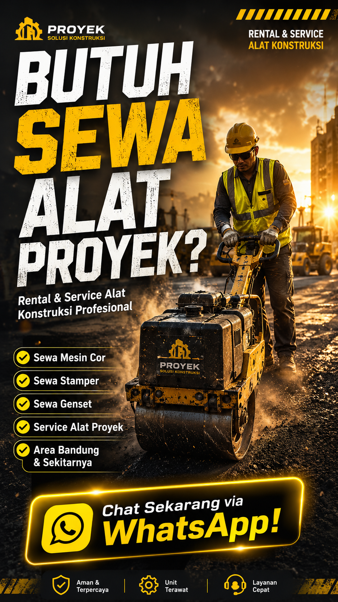

Jual, Beli, Sewa & Service
Alat Proyek Bandung
Rental alat proyek Bandung terpercaya. Menyediakan sewa mesin cor, stamper, genset, jack hammer, molen beton, mesin las, dan jasa service alat konstruksi area Bandung dan seluruh Jawa Barat.
Keunggulan ProyekTools Bandung
ProyekTools adalah penyedia layanan rental dan service alat proyek konstruksi terpercaya di Bandung. Berkomitmen mendukung keberhasilan proyek pembangunan Anda dengan alat berkualitas dan layanan profesional.
Harga Terjangkau
Tarif rental alat proyek kompetitif untuk wilayah Bandung dan Jawa Barat. Tanpa biaya tersembunyi, hemat biaya proyek konstruksi Anda.
Alat Terawat
Seluruh alat proyek dirawat secara berkala untuk memastikan performa optimal di lapangan. Siap pakai untuk proyek Anda di Bandung.
Teknisi Berpengalaman
Tim teknisi bersertifikat siap membantu setup dan troubleshooting alat proyek langsung di lokasi proyek Anda.
Pengiriman Cepat
Armada pengiriman sendiri siap antar alat proyek ke lokasi konstruksi Anda di Bandung, Cimahi, dan sekitarnya tepat waktu.
Support Cepat
Layanan pelanggan responsif siap membantu Anda 7 hari seminggu via WhatsApp. Konsultasi gratis untuk kebutuhan alat proyek.
Service Bergaransi
Setiap perbaikan dan service alat proyek dilengkapi garansi untuk menjamin kepuasan pelanggan di Bandung dan Jawa Barat.
Katalog Alat Proyek Bandung
Pilih dari ratusan alat proyek berkualitas yang siap disewakan untuk mendukung proyek konstruksi Anda di Bandung dan sekitarnya. Harga rental kompetitif, alat terawat, dan pengiriman cepat.
Layanan Service Alat Proyek Bandung
Tim teknisi ProyekTools siap menangani perbaikan dan maintenance berbagai jenis alat proyek konstruksi di Bandung. Hasil berkualitas, bergaransi, dan bisa panggil ke lokasi proyek Anda.
Service Mesin Cor
Perbaikan dan kalibrasi mesin cor beton untuk performa optimal saat pengecoran di lokasi proyek Bandung.
Service Genset
Overhaul, perbaikan alternator, dan maintenance rutin genset semua merk untuk kebutuhan listrik proyek Anda.
Service Mesin Las
Perbaikan transformer, regulator, dan komponen mesin las atau setum untuk pengelasan konstruksi.
Service Stamper
Perbaikan engine, spring, dan plate stamper kodok maupun stamper tangan untuk pemadatan tanah.
Maintenance Alat Proyek
Layanan perawatan berkala untuk menjaga kondisi alat proyek konstruksi Anda tetap prima dan siap pakai.
Perbaikan Alat Konstruksi
Menangani berbagai kerusakan alat konstruksi dari ringan hingga berat oleh teknisi berpengalaman Bandung.
Butuh jasa service alat proyek di Bandung sekarang?
Ajukan ServiceAjukan Service Alat Proyek
Isi form di bawah ini untuk mengajukan permintaan service alat proyek Anda di Bandung. Tim teknisi kami akan segera menghubungi melalui WhatsApp untuk konfirmasi jadwal kunjungan.
Kami Melayani Area Bandung dan Sekitarnya
ProyekTools melayani rental dan jasa service alat proyek untuk seluruh wilayah Bandung, Cimahi, Kabupaten Bandung, Bandung Barat, dan kota-kota di Jawa Barat. Siap kirim alat ke lokasi proyek Anda.
Bandung
Kota Bandung dan sekitarnya, meliputi Coblong, Cidadap, Sukajadi, Cicendo, Sumur Bandung, dan lainnya.
Cimahi
Seluruh wilayah Kota Cimahi termasuk Cimahi Utara, Selatan, Tengah, dan Kebonwaru.
Padalarang
Kawasan Padalarang dan sekitarnya di Kabupaten Bandung Barat, dekat dengan pintu tol.
Soreang
Ibukota Kabupaten Bandung dan kawasan sekitarnya untuk proyek infrastruktur dan perumahan.
Banjaran
Wilayah Banjarang dan selatan Kabupaten Bandung untuk proyek pembangunan dan konstruksi.
Sumedang
Seluruh wilayah Kabupaten Sumedang termasuk area proyek di Jatinangor dan sekitarnya.
Garut
Wilayah Kabupaten Garut untuk kebutuhan rental dan service alat proyek konstruksi.
Tasikmalaya
Kota dan Kabupaten Tasikmalaya, melayani pengiriman alat proyek ke lokasi konstruksi.
Lokasi proyek Anda tidak tercantum? Hubungi kami, kemungkinan besar kami tetap bisa melayani.
Tanya Area LayananPertanyaan yang Sering Ditanyakan
Jawaban atas pertanyaan umum seputar layanan rental alat proyek dan jasa service alat konstruksi ProyekTools di Bandung.
Berapa harga sewa mesin cor di Bandung?
Harga sewa mesin cor di ProyekTools Bandung mulai dari Rp 500.000 per hari. Harga dapat bervariasi tergantung tipe mesin cor, durasi sewa, dan apakah termasuk jasa operator. Untuk mendapatkan penawaran harga terbaik yang sesuai dengan kebutuhan proyek Anda, silakan hubungi kami via WhatsApp untuk konsultasi gratis.
Apakah ProyekTools melayani area luar Bandung?
Ya, ProyekTools melayani pengiriman alat proyek ke seluruh wilayah Jawa Barat termasuk Cimahi, Padalarang, Soreang, Kabupaten Bandung, Bandung Barat, Sumedang, Garut, dan Tasikmalaya. Biaya pengiriman akan disesuaikan dengan jarak lokasi proyek. Hubungi kami untuk informasi lebih lanjut mengenai coverage area.
Apakah tersedia jasa service alat proyek di Bandung?
Ya, ProyekTools menyediakan jasa service dan perbaikan berbagai alat proyek seperti mesin cor, genset, mesin las, stamper, dan alat konstruksi lainnya. Tim teknisi berpengalaman kami siap melayani service panggilan ke lokasi proyek di area Bandung dan sekitarnya. Setiap perbaikan dilengkapi garansi untuk menjamin kepuasan pelanggan.
Apakah ProyekTools bisa mengirimkan alat ke lokasi proyek?
Ya, kami menyediakan layanan pengiriman alat proyek langsung ke lokasi proyek Anda menggunakan armada pengiriman sendiri. Proses pengiriman cepat dan aman. Kami melayani pengiriman ke seluruh wilayah Bandung, Cimahi, dan kota-kota di Jawa Barat. Jadwal pengiriman bisa disesuaikan dengan kebutuhan proyek Anda.
Apakah alat yang disewakan dalam kondisi terawat dan bergaransi?
Seluruh alat proyek yang kami sewakan dalam kondisi terawat dan telah melalui pengecekan rutin sebelum diserahkan ke customer. Jika terjadi kerusakan yang bukan karena kesalahan penggunaan selama masa sewa, kami akan melakukan penggantian alat. Untuk layanan service, setiap perbaikan kami berikan garansi untuk menjamin kepuasan pelanggan.
Bagaimana cara sewa alat proyek di ProyekTools Bandung?
Cara sewa alat proyek di ProyekTools sangat mudah:
- Pilih alat yang dibutuhkan dari katalog website kami.
- Hubungi kami via WhatsApp di 0813-1341-3771.
- Sampaikan tanggal sewa, lokasi proyek, dan durasi pemakaian.
- Kami akan mengkonfirmasi ketersediaan dan harga.
- Alat dikirim ke lokasi proyek Anda tepat waktu.
Apa Kata Customer Kami
Kepuasan pelanggan adalah prioritas utama kami. Berikut pengalaman customer yang menggunakan layanan rental dan service alat proyek ProyekTools di Bandung.
Siap Memulai Proyek di Bandung?
Hubungi kami sekarang untuk konsultasi gratis dan dapatkan penawaran terbaik untuk kebutuhan rental dan service alat proyek konstruksi Anda di Bandung dan Jawa Barat.